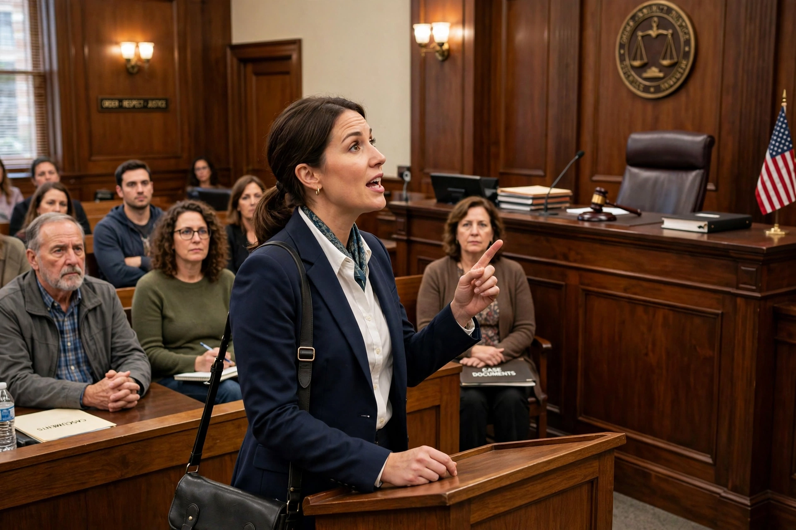

Cause lawyeringA cause lawyer, also called a public interest or movement lawyer, is a lawyer who uses litigation and legal advocacy to advance a social or political cause rather than (or in addition to) serving individual clients for fees. Cause lawyers seek to transform the law or society on behalf of disadvantaged groups, unpopular causes, or ideological commitments.
The concept was developed in legal scholarship, notably in the work of Stuart Scheingold (The Politics of Rights, 1974) and in Austin Sarat and Scheingold's edited volumes on cause lawyering (1998 onward). Unlike the conventional lawyer bound by neutrality and client control, the cause lawyer's loyalty to a cause can create tensions with professional ethics, client autonomy and funding sources.
Cause lawyers work in organisations such as the NAACP Legal Defense Fund, the ACLU, environmental law groups like Earthjustice, and conservative counterparts such as the Pacific Legal Foundation. Landmark cause litigation includes Brown v. Board of Education, brought by Thurgood Marshall and the NAACP LDF's incremental campaign against school segregation. Impact litigation, test cases, and law reform campaigns are characteristic strategies.
Critics argue cause litigation bypasses democratic politics and that lawyers may privilege their agenda over clients' wishes; defenders reply it gives voice to those excluded from political power.